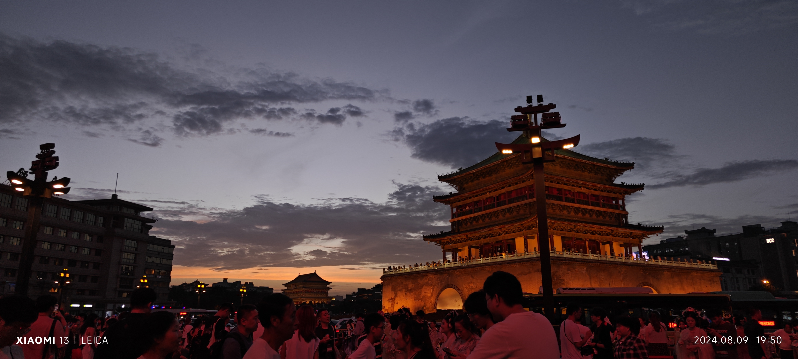
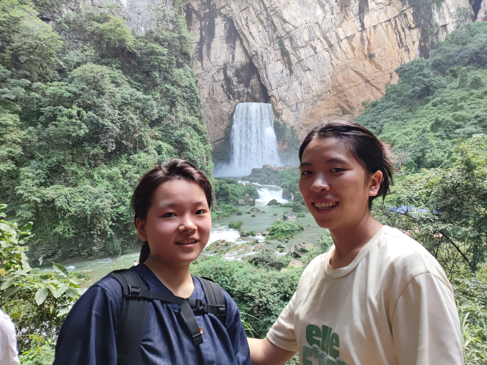

Beyond research
A place for everyday moments, activities, and things I enjoy outside research.
Four albums, no timeline. Open a group to see more; select a photo to view the original file.
Xi’an, my hometown
Xi’an, Shaanxi — my hometown. A little glimpse of where I’m from.

Get to know my hometown
More glimpses of Xi’an to come.
Next landscape photo
Next portrait photo
Mountains, water & open skies
Moments outdoors, gathered by theme rather than date.

See 6 more outdoor moments


The everyday
Green spaces, quiet evenings, and a little silliness.

See 2 more everyday moments

Time to move
A moment at the gym.